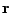

Interest in least-squares finite element methods continues to grow due to at least two of its major strengths. First, the linear systems obtained after discretization are SPD and often elliptic so that they can be efficiently solved (often with optimal scalability) using a number of iterative methods, including conjugate gradients and multigrid. Second, the least-squares functional provides a sharp measure of the local error with negligible computational costs. Despite these two major advantages, the methods have not gained widespread use, largely because they are perceived as not providing accurate approximations to the true solution, especially with regards to conservation of mass. The least-squares finite element method is not discretely conservative, but the approximate solutions given by the method are the most accurate approximate solutions possible in the functional norm for a given finite-dimensional space. The method converges to the approximation that minimizes the functional, so it gives a relatively accurate solution in the functional norm.
However, anyone would agree that an approximate solution to the Navier-Stokes equations that has an inflow rate that is 100 times the outflow rate is not an acceptable approximation, even if it is `accurate' in some norm. Unfortunately, some combinations of common least-square functionals and finite element spaces for the Navier-Stokes equations generate solutions that lose 99% of the mass between the inflow and outflow boundaries for some particular boundary conditions. Herein lies the challenge for least-squares methods: how do we formulate a functional and boundary conditions that better represents the type of accuracy we desire?
In this talk, two new first-order system reformulations of the Navier-Stokes equations are presented that admit a wider range of mass conserving boundary conditions. It is common with least-squares methods to rewrite the Navier-Stokes equations as a system of first-order equations using the velocity-vorticity form. The two new first-order systems are based on the velocity-vorticity form, but they include a new variable, , representing the pressure gradient plus all or part of the convective term. As we will demonstrate, the resulting operator problem can be solved very efficiently using a multigrid or an algebraic multigrid solver, and excellent mass conservation is observed for multiple test problems. A difficulty with the new formulations is obtaining boundary conditions for the new variable, , but we will demonstrate at least three different methods for overcoming this difficulty.